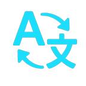

GreasyFork PremiumModern themes, favorites, notes and script previews
Useful on every Greasy Fork visit.
OmniChat ExporterExport any AI conversation instantly

Ultimate TranslatorTranslate selected text instantly01Projet phare
GreasyFork Premium
Une refonte complète de Greasy Fork et Sleazy Fork avec thèmes modernes, favoris, aperçu des scripts et outils de productivité.